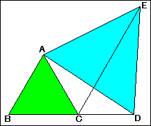

Two equilateral triangles(2)
In the right figure, ABC and ADE are equilateral triangles.Point C is on the segment BD.Find the triangle which is congruent with the triangle ABD .

Applet
How to use this applet
Drag red point.
Press "Define" buttton to go next.
Drag red point to rotate the triangle ABD.